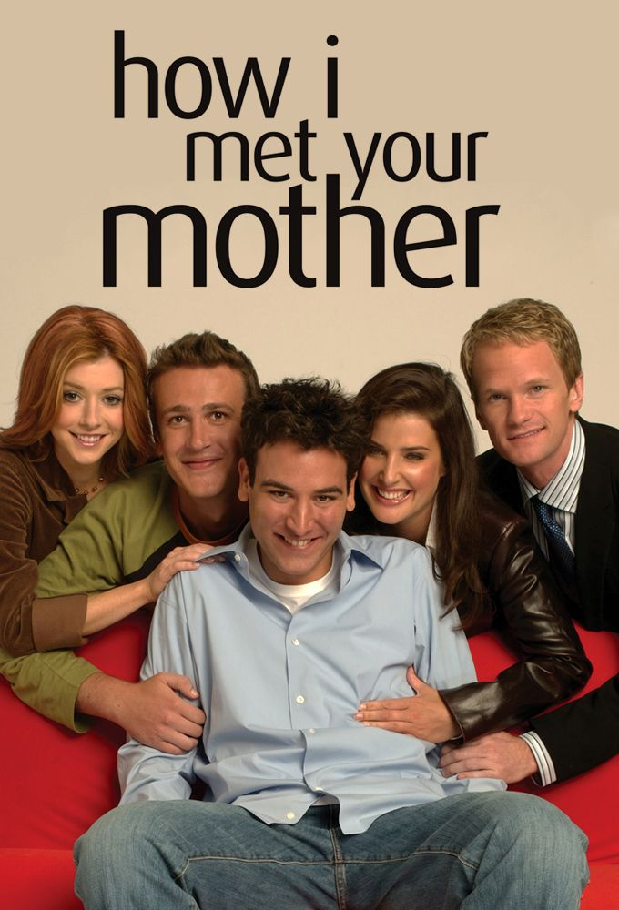

How i met your mother

Descubra o porque himym virou um classico
How I Met Your Mother (HIMYM) é uma das comédias mais queridas da televisão, conquistando uma legião de fãs ao longo de suas nove temporadas.
Lançada em 2005, a série segue a história de Ted Mosby (interpretado por Josh Radnor), que, ao contar para seus filhos como conheceu sua mãe, relembra os momentos e personagens que marcaram sua vida.
A narrativa é recheada de flashbacks, piadas recorrentes e um elenco carismático que se torna quase uma segunda família para os telespectadores.
Personagens unicos e iconicos
O grande atrativo de How I Met Your Mother são seus personagens, cada um com suas peculiaridades que garantem momentos hilários e emocionantes.
Ted Mosby, o sonhador romântico, busca incessantemente o amor verdadeiro, enquanto Marshall (Jason Segel) e Lily (Alyson Hannigan) formam o casal que todos queriam ser.
Robin (Cobie Smulders), com seu espírito independente e sua paixão por jornalismo, e Barney (Neil Patrick Harris), o carismático playboy com um jeito irreverente e frases inesquecíveis, completam o grupo de amigos.
Juntos, eles vivenciam aventuras que, ao longo do tempo, moldam não apenas suas relações, mas também as suas trajetórias pessoais.
A narrativa: Humor e reflexão
O grande diferencial de How I Met Your Mother está na forma como ela mistura humor com momentos de reflexão.
Embora seja uma série de comédia, com piadas rápidas e situações absurdas, ela também toca em temas como amizade, amor, escolhas de vida e o peso do tempo.
A constante busca de Ted por sua alma gêmea é um reflexo das inquietações de muitos, enquanto as relações de amizade do grupo mostram o quanto o apoio entre amigos pode ser crucial, mesmo nas situações mais inesperadas.
Além disso, a série foi pioneira ao utilizar uma estrutura narrativa não linear, com flash-forwards e flashbacks que mantêm o espectador sempre ansioso pelo próximo episódio.
O impacto cultural que a serie causou
How I Met Your Mother também teve um grande impacto na cultura pop.
Com frases icônicas como “Haaaave you met Ted?” ou "legen-wait-for-it-dary" de Barney, e referências constantes a músicas, filmes e até ao estilo de vida moderno, a série se tornou parte do imaginário coletivo.
A maneira como os personagens lidam com os dilemas da vida adulta, como trabalho, relacionamentos e amizades, ressoou profundamente com uma geração que acompanhava a série.
O legado de HIMYM é, sem dúvida, algo que permanece vivo, influenciando outras produções e mantendo-se relevante no coração dos fãs, mesmo anos após seu fim.
Fatos e curiosidades sobre a serie
-
O Final Polêmico
O final da série, exibido em 2014, gerou muita discussão entre os fãs.
A escolha de Ted Mosby, após toda a jornada, deixou muitos espectadores surpresos, com reações variadas sobre o destino dos personagens principais, especialmente de Robin e Tracy (a "mãe").
-
“Mãe” Só Aparece no Fim
Apesar de ser o foco central da história, a personagem da "mãe", Tracy McConnell, interpretada por Cristin Milioti, só faz sua primeira aparição no episódio final da oitava temporada, sendo finalmente revelada ao público como a mulher com quem Ted se casaria
Barney Stinson e Neil Patrick Harris
Neil Patrick Harris, o ator por trás de Barney, foi um dos principais responsáveis pelo sucesso da série.
Sua interpretação carismática e suas famosas "regras" para sedução ("The Bro Code", "The Playbook") se tornaram parte essencial da cultura pop.O Ícone da "Sopa de Lentes"
Durante a série, Barney inventa um prato chamado "sopa de lentes", que, na verdade, não existe.
Essa piada foi uma brincadeira entre os roteiristas, que queriam algo completamente absurdo e engraçado para refletir o exagero do personagem.O “Slap Bet” (A Aposta do Tapa)
Uma das tradições mais divertidas da série é a Slap Bet, onde Marshall tem direito a dar cinco tapas em Barney, sendo o primeiro o mais aguardado pelos fãs.
A aposta gerou várias cenas hilárias ao longo das temporadas e se tornou um dos momentos mais icônicos da série. O Jogo do "Vamos Fazer uma Aposta"
Os amigos de How I Met Your Mother eram famosos por fazer apostas e desafios malucos entre si.
Uma das mais famosas foi a "Aposta do Barney", onde ele aposta que Ted nunca seria capaz de se tornar um "cool guy" e largar seu desejo de ser romântico.A Canção de Barney “HIMYM”
A canção de "The Piano Man" é uma das mais lembradas da série, especialmente quando Barney canta uma versão alterada dela durante a despedida da série.
A música ficou tão popular que muitos fãs se lembram dela como parte da cultura da série.A Inspiração de Ted Mosby
O personagem de Ted Mosby foi inspirado nos próprios criadores da série, Carter Bays e Craig Thomas. Ambos eram amigos que se mudaram para Nova York, e o conceito de um homem tentando encontrar o amor enquanto lida com a vida adulta e amizades surgiu de suas próprias experiências.O Set de Filmagem Era Famoso
Muitas das cenas externas da série foram filmadas no famoso bairro de Manhattan, mas os sets internos, como o MacLaren’s Pub, eram recriados em estúdios.
O bar, por exemplo, era um cenário replicado, e boa parte dos momentos no "bar" eram filmados em estúdiosO Elenco Quase Foi Diferente
Antes de escolher o elenco final, os produtores consideraram outros atores para os papéis principais.
Por exemplo, o papel de Ted Mosby quase foi para o ator Matt Czuchry, mais conhecido por seu papel em The Good WifeO Lendário “Intercâmbio de Casos”
Em vários momentos da série, há um “intercâmbio de casos” em que Ted e seus amigos trocam conselhos sobre relacionamentos.
Isso se tornou uma parte essencial dos diálogos, mostrando o quanto os personagens valorizavam a opinião uns dos outros.O Nome “How I Met Your Mother”
O nome da série é, na verdade, uma piada sobre o formato narrativo utilizado.
Ted está constantemente “contando” a história de como conheceu a mãe dos seus filhos, mas ao longo de toda a série, ele fala muito mais sobre as suas aventuras, desventuras e amizades do que sobre o próprio encontro com a "mãe".O "Bro Code"
O Bro Code, que Barney segue à risca, é uma das maiores fontes de humor da série.
O código de ética masculino, embora exagerado, virou um símbolo do relacionamento entre os amigos e gerou até livros e artigos baseados nas "regras".O Elenco Continuou Amigos Após o Fim da Série
Depois que How I Met Your Mother chegou ao fim, o elenco continuou mantendo uma forte amizade.
Neil Patrick Harris, Cobie Smulders, Jason Segel, Alyson Hannigan e Josh Radnor, frequentemente compartilham fotos e mensagens de carinho nas redes sociais, reforçando o forte vínculo que criaram ao longo das filmagens.